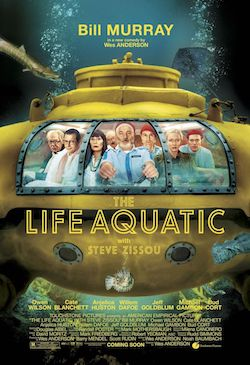
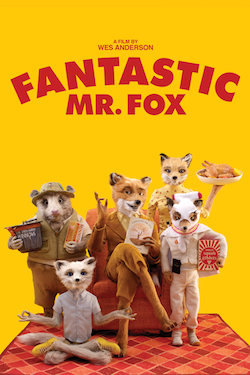
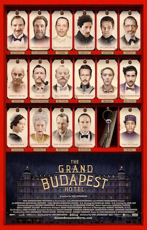

|  |
Life Aquatic with Steve ZissouWith a plan to exact revenge on a mythical shark that killed his partner, oceanographer Steve Zissou rallies a crew that includes his estranged wife, a journalist, and a man who may or may not be his son. |
|  |
Fantastic Mr. FoxAn urbane fox cannot resist returning to his farm raiding ways and then must help his community survive the farmers' retaliation. |
|  |
The Grand Budapest HotelThe adventures of Gustave H, a legendary concierge at a famous hotel from the fictional Republic of Zubrowka between the first and second World Wars, and Zero Moustafa, the lobby boy who becomes his most trusted friend. |